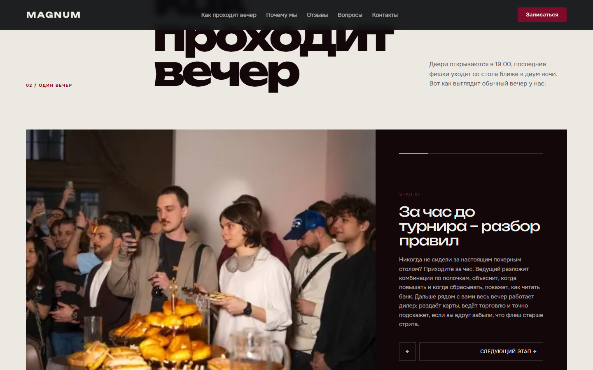
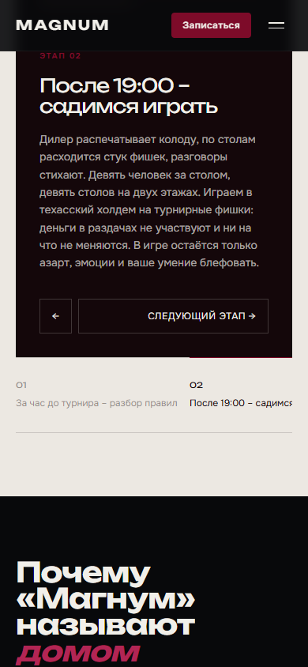
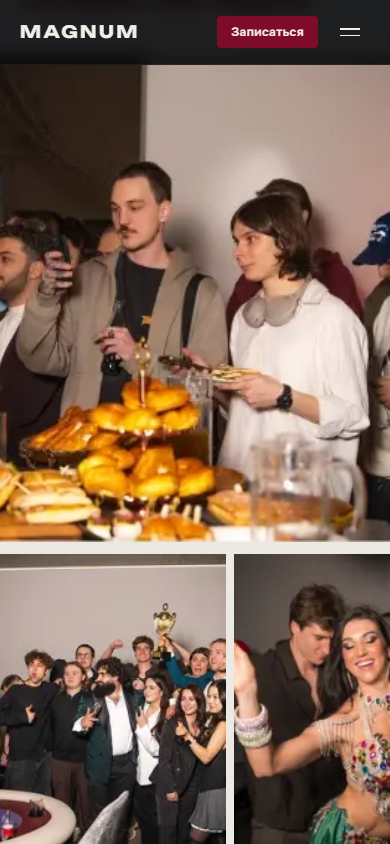
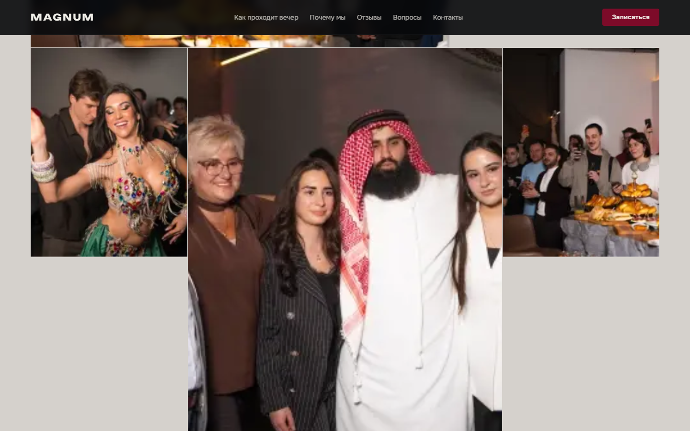

Сайт клуба спортивного покера, построенный вокруг людей и сценария одного вечера: вход, знакомство с правилами, игра, пауза, финал и новые контакты.
Сохранить реальные материалы и характер проекта, убрать ощущение универсального лендинга и провести человека через настоящий ритм клуба. Главный интерактив переключает пять этапов вечера внутри одной большой media-сцены.
Три выразительных момента: кинематографичный вход, управляемая последовательность вечера и плотная галерея без декоративных карточек.




Приоритетная историческая версия подтверждена авторскими desktop/mobile записями. Точный исходник этой версии не найден, поэтому новые материалы честно обозначены как portfolio polish, а архивные видео остаются доказательством исходного продукта.